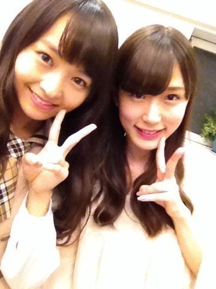

| 2013/10 25 Fri | 全力ウインク。509回目 |
samurai ELOさんの衣装
かわいかった！
大量のスナップの中から
選ぶの大変でした。
自分がしたい格好を選びました。
みなさんぜひ見てねー

ちら、と
昨日はある撮影がありました。
こんなはっちゃけることあるのかな
というくらいおもしろかった
制作期間、忙しいけど
楽しいことばっかりです。
いろいろ楽しみです。
楽しいなー
テストが終わったからってのもあるが
テンションが高い。
まだ期末残ってるけど。
今は忘れるしーーー
だってハロウィンだしー
そういう気分だしーー
だってかぼちゃめっちゃ食べるし
パンプキンプリン美味しいし
今日のVAMPSさん主宰
ハロウィンパーティー出たかったー
明後日も私は出演しません...
いーーーーなーーーー
もう
ハロウィンジャンキーオーケストラ
聴いてひとりで盛り上がるもんね
明日は写真集お渡し会だ！
久しぶりに会えますねっ
台風がこわいけど...

りしゃこっ
私は安定した眉毛っ
おやすみなさい
まりか
コメント(256)
2013/10/25 22:36